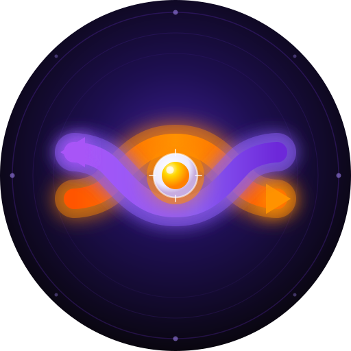

Better shuffle for your Spotify library
You need a free Spotify Developer Client ID. The guide above walks you through it in about 2 minutes.
Starting…
First builds scan your artist library — this can take 30–60 seconds. Future builds are much faster.